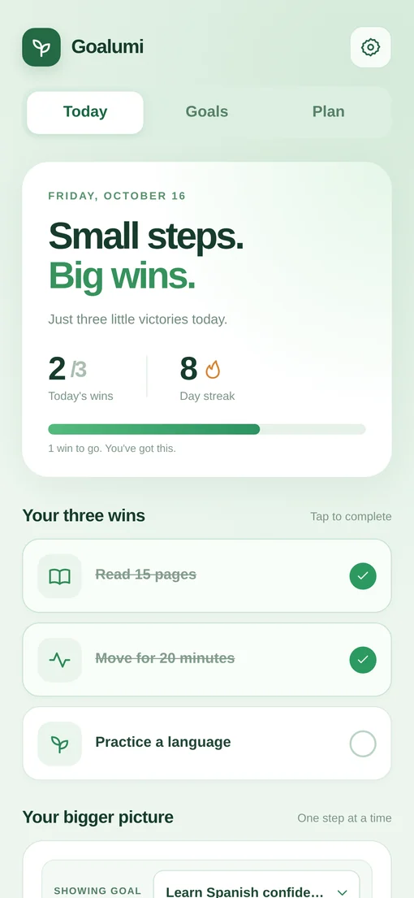

Build consistent habits
Choose three important habits, check them off each day, and track your progress.
Build daily habits, break ambitious goals into simple actions, and plan progress around real life.
Free to use · No account required · Your progress stays on your device
Get support
Today, one step at a time.Choose three important habits, check them off each day, and track your progress.
Organize ambitions into editable milestones and manageable steps.
Make a weekly plan, consider your available time, and review suggested changes when plans shift.
No account, advertising, or cloud synchronization in this release. You can export a backup at any time.